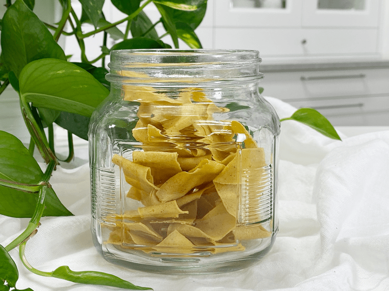
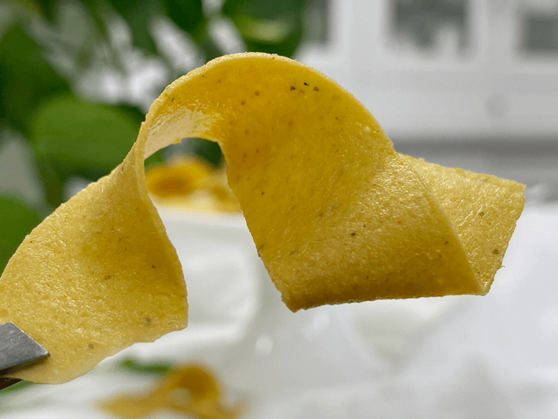
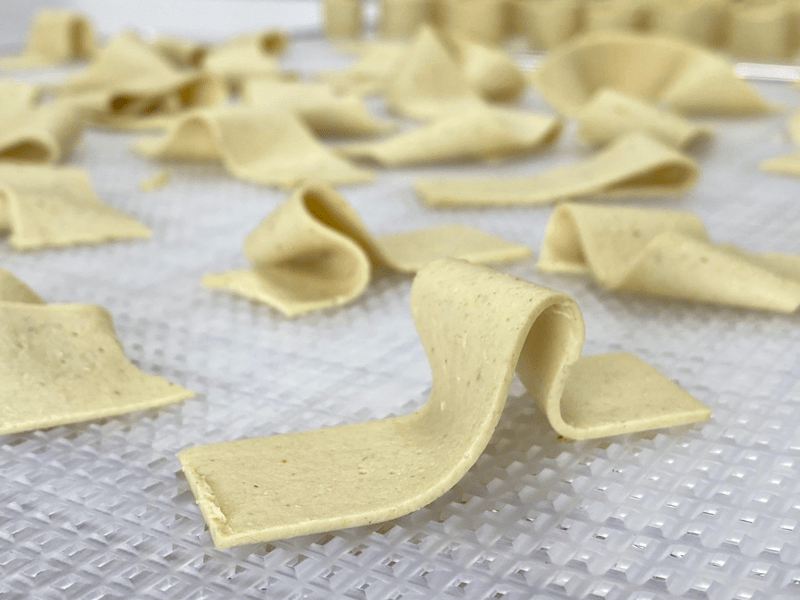
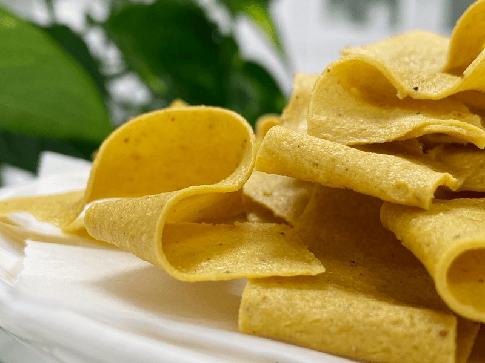

Vegan Sweet and Spicy Mustard Cheese Chips | Oil-Free
Crispy, crunchy, flavorful, cheesy chips! Vegan, gluten-free, grain-free, and nut-free! They are not 100% raw due to the agar, but if you don’t have an issue with that, you will be pleasantly delighted by this recipe. I coined this technique years ago while experimenting in the kitchen. I will never stop playing with my food because there many more discoveries to be had!

As I mentioned above, these chips are not 100% raw. I used agar powder to help set up the cheese so that I could slice it into thin chips. You can’t avoid using this ingredient, not if you want chips anyway. If you are unsure about it, you can read my post (here) to learn more. Truthfully, the stuff used to scare me. I didn’t understand what it was, why it is used, or most of all; how to use it in my home kitchen. It seemed as though it belonged in a chemistry lab! But after using it a few times and learning just how easy and fun it was to work with, I felt silly that I allowed a little white powder to frighten me so.
Chip Technique
The technique is just as important when making these chips as the ingredients are! The main thing is to create THIN chips. If they are too thick, the chips will be tough and chewy, which is something that we want to avoid. To achieve this, I highly recommend the following mandolin or one similar to it. Click (here). My mandoline is years old and doesn’t have the fancy thickness setting like the one in the link. But, that’s ok, just set it at the thinnest setting and off you go!

Awe, come on! Look at that chip! I took a close up photo so you could really appreciate it. To create the fun chip shapes, hold the mandolin over the dehydrator tray. As you slide the cheese block across the blades, let the chips fall where they may, folds, creases, and all! They are like snowflakes; no two should be the same. Well, I am going to grab my bowl of cheesy chips, a bubbly kombucha, and watch my favorite Christmas movie. Have a blessed and wonderful day, amie sue
 Ingredients:
Ingredients:
Cheese base:
- 2 cups (256 g) raw sunflower seeds, soaked
- 1 1/2 (320 g) cup water
- 2 1/2 Tbsp (25 g) lemon juice
- 3 Tbsp (38 g) raw Sweet & Spicy Mustard
- 1 Tbsp (13 g) raw apple cider vinegar
- 1 Tbsp (20 g) maple syrup
- 1/4 cup (30 g) nutritional yeast
- 1-2 tsp (6-12 g) Himalayan pink salt (I used 2)
- 1 tsp (3 g) onion granules or powder
- 1 tsp (2 g) garlic powder
- 1 tsp (4 g) ground cumin
- 1/2 tsp (1 g) turmeric
Agar gel:
Preparation:
Cheese base:
- After soaking the sunflower seeds, drain and rinse them. Place in a high-powered blender.
- Add 1 1/2 cup water, lemon juice, mustard, vinegar, agave, nutritional yeast, salt, onion granules, garlic powder, cumin, and turmeric. Blend until creamy; it will be thick. If you have a Vitamix with a plunger, use that to keep the mixture moving. Otherwise, stop your machine occasionally to scrape the sides down.
- Test for grittiness by rubbing it between your thumb and finger. If you feel any grit, keep blending.
Agar gel:
- Once the cheese mixture is ready, it is time to make the agar gel. In a small saucepan, bring 1 cup of water to a light boil, add the agar. Stir continuously until the agar had dissolved – this can take several minutes. Keep whisking! If it gels up in the pan, return to heat and melt it down again.
- Start the blender and get a vortex going with the mixture. Drizzle in the agar gel and blend until combined. You will need to stay focused and move fairly quickly. Agar will start to set up as it cools.
- Pour into mold and then place in the fridge, uncovered, for at least 30 minutes.
- Note ~ I don’t use anything to prepare my molds to help them release once it has set. Generally, it just pops out.
Creating the chips:
- Remove the cheese from the mold and using a mandolin, cut very thin slices, allowing them to drop directly onto the mesh sheet that comes with the dehydrator.
- Let the chips fall where they may, even if they fold and crinkle. They are like snowflakes; no two should be the same.
- Think of how chips look when you buy a bag of them… or used to anyway. hehe
- If the slices are too thick, the chips will be tougher to eat.
- Sprinkle with sea salt and black pepper.
- Dehydrate at 145 degrees (F) for 1 hour, then reduce to 115 degrees (F) for 10+ hours.
- The dry time will vary depending on how full the machine is, the humidity, climate, and so forth. So use the dry times as a guide.
- One done and crispy, allow them to cool and then store in an airtight container on the counter for 5-7 days. If they start to collect moisture, simply pop them back in the dehydrator to crisp up.
-

-
The chips are ready to go into the dehydrator.
-

-
Once done, you can see how much the color changes as they dry.
© AmieSue.com